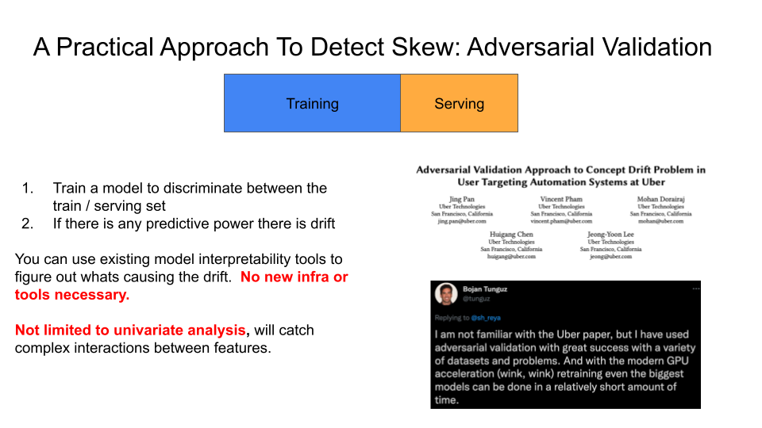

Debugging AI With Adversarial Validation
For years, I’ve relied on a straightforward method to identify sudden changes in model inputs or training data, known as “drift.” This method, Adversarial Validation1, is both simple and effective. The best part? It requires no complex tools or infrastructure.
Examples where drift can cause bugs in your AI:
- Your data for evaluations are materially different from the inputs your model receives in production, causing your evaluations to be misleading.
- Updates to prompts, functions, RAG, and similar elements aren’t incorporated into your fine-tuning or training data, leading to unexpected model behavior in production.
No matter how careful you are, bugs can still slip through the cracks. A a high ROI activity is to routinely audit all your AI/ML projects for drift.
How It Works
This method is so simple that it might seem uncool. You aren’t going to impress any data scientists. Despite this, it’s too valuable to ignore.
This slide from my talk on MLOps tools explains the technique behind Adversarial Validation2:

The process is as follows:
- Collect two datasets to compare. For example:
- Training data from two different fine-tuning runs
- Training data vs. evaluation data
- Training data vs. production data (organized into the same format)
- Data from two different time-periods
- Create features from the dataset. A basic example that creates features from tokens is illustrated here.3
- Give dataset #1 a label of 0 and dataset #2 a label of 1.
- Fit a binary classifier (random forest, logistic regression, etc) to discriminate between the two datasets.
- If the classifier demonstrates sufficient predictive power (ex: AUC >=0.60), we know there is drift.
- If you used an interpretable model (like logistic regression, random forest, etc.), you can inspect feature importance metrics to understand the root cause of the drift. If you use a more complex model (like a neural network), you can use SHAP values or other methods to understand what is causing the drift. I recommend starting with a simple interpretable model.
If this process doesn’t detect drift, it doesn’t mean there isn’t drift. It just means that we couldn’t detect it with the model and features we used.
Minimal Example: ft_drift
I work with lots of folks who are fine-tuning models using the OpenAI API. I’ve created a small CLI tool, ft_drift, that detects drift between two multi-turn chat formatted jsonl files. Currently, ft_drift only detects drift in prompt templates, schemas and other token-based drift (as opposed to semantic drift). However, this is a good starting point to understand the general concept of adversarial validation. Here is a demo of this tool at work:
The demo is from a real-world example where an unintentional change in a prompt template caused unexpected behavior in a model. The demo shows the tool detecting a difference between two datasets, file_a.jsonl and file_b.jsonl. Afterward, a table of important tokens that account for the drift are shown, such as END-UI-FORMAT, UI-FORMAT, etc. We were able to apply the tool and quickly find the root cause of the issue. The modeling code is embarrassingly simple and located at ft_drift/model.py. The point is you don’t need sophisticated techniques to get started. You can then take this approach further by adding embeddings to your features to also detect semantic drift. Similarly, you could add additional features by hand like the number of conversation turns, length of messages, etc.
Footnotes
I first learned of this technique in 2016 from this blog post by Zygmunt Zając. Throughout the years, I’ve seen this technique used in a variety of contexts, sometimes with different names.↩︎
This slide uses the word “skew” which is interchangeable with “drift” in this context.↩︎
For classic ML, if you are already training a model on this data, you likely have a feature engineering pipeline that you can reuse.↩︎